곰팡이·세균 번식
저수조와 급수 라인, 얼음 저장고는 세균과 곰팡이가 자라기 좋은 환경입니다. 눈에 보이는 얼음은 깨끗해도 경로는 오염될 수 있습니다.
업소용 제빙기 완전 분해 세척 전문
완전 분해 세척과 고온 스팀 살균으로 카페·체인점·호텔·프랜차이즈 매장의 제빙기를 관리합니다. 손님 입에 닿는 얼음, 기계 속부터 깨끗하게

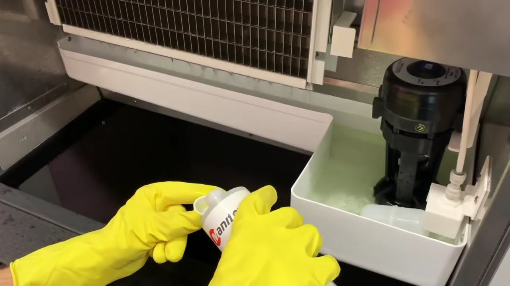
취급 브랜드
전 브랜드 모두 진행합니다. 모델명을 몰라도 괜찮습니다. 전화로 모델명을 알려 주시거나, 모델명 스티커 사진이나 제빙기 사진만 보내 주셔도 기종을 확인해 드립니다.
WHY CLEANING
제빙기 내부는 물이 계속 닿고 어둡고 습해, 관리가 없으면 오염이 쌓이기 쉬운 구조입니다. 얼음에서 냄새가 나거나 맛이 달라졌다면 이미 신호가 온 것입니다.
저수조와 급수 라인, 얼음 저장고는 세균과 곰팡이가 자라기 좋은 환경입니다. 눈에 보이는 얼음은 깨끗해도 경로는 오염될 수 있습니다.
수돗물의 미네랄이 제빙판과 노즐에 쌓이면 얼음이 잘 떨어지지 않고 생산량이 줄어, 기계에 무리가 가기 시작합니다.
오염이 쌓이면 얼음이 흐려지고 모양도 고르지 않게 나오며, 쿰쿰한 냄새가 음료 본연의 맛을 해칩니다. 음료 맛에 대한 손님 불만은 대부분 얼음에서 시작됩니다.
펌프·밸브·센서에 낀 이물질은 잔고장의 원인이 됩니다. 정기적인 분해 세척이 큰 수리비를 막는 가장 확실한 방법입니다.
SERVICE SCOPE
표면만 닦는 청소가 아닙니다. 물과 얼음이 지나가는 모든 부품을 분해해 세척하고 살균합니다.
PROCESS
전화 한 통이나 사진 한 장으로 시작합니다. 매장 영업에 지장이 없도록 시간은 최대한 맞춰 드립니다.
전화로 모델명을 알려 주시거나, 모델명 스티커 사진 또는 제빙기 사진을 보내 주세요. 기종과 상태를 확인해 청소 내용과 비용을 안내합니다. 얼음 상태 같은 증상이 있으면 함께 알려 주세요.
오픈 전, 영업 중, 마감 후 중 매장에 편한 시간으로 일정을 잡고 약속한 시간에 방문합니다.
전원을 차단하고 주변을 보양한 뒤, 물이 닿는 부품을 하나하나 분해합니다.
워터펌프와 호스·노즐·파이프까지 친환경 세제로 분해 세척하고, 냉판의 석회와 물때를 탈거합니다.
깊은 내부를 스팀 고압세척하고 헹궈 낸 뒤, 고온 스팀으로 곰팡이와 세균을 살균합니다.
재조립 후 전원을 연결해 새 얼음이 투명하게 잘 얼고 모양이 고르게 나오는지 확인하고, 주변까지 정리합니다.
모델명을 몰라도 상담이 막히지 않습니다. 편한 방법으로 알려 주시면 아이스랩에서 기종을 확인합니다.
CLEAN SERVICE
제빙기 청소를 중심으로, 매장 위생에 필요한 청소를 함께 진행합니다.
완전 분해 세척 · 고온 스팀 살균
원두 기름때와 찌꺼기 분해 세척
필터·내부 세척, 냄새와 곰팡이 제거
두껍게 언 성에 제거와 내부 정리
카페·매장 전체 위생 청소
ONE-TIME · REGULAR
지금 당장 필요한 청소 한 번도, 매장 위생을 꾸준히 맡기는 정기 관리도 가능합니다.
얼음에서 냄새가 나거나, 인수한 매장의 기계 상태가 걱정되거나, 위생 점검을 앞두고 있을 때 한 번 맡기는 방식입니다.
청소 시기를 놓치지 않도록 주기적으로 방문해 관리하는 방식입니다. 매번 신경 쓰지 않아도 깨끗한 상태가 유지됩니다.
청소 내용은 정기든 1회든 동일합니다. 분해 세척부터 스팀 살균까지 같은 과정으로 진행되며, 달라지는 것은 방문 횟수뿐입니다. 횟수와 간격은 고정된 기준이 아니라, 매장의 사용량과 기계 상태를 보고 고객과 상의해 정합니다.
PARTNERS
아이스랩이 제빙기 청소로 함께하는 커피 브랜드 매장들입니다. 프랜차이즈부터 동네 개인 카페까지, 얼음을 쓰는 곳이라면 함께합니다.
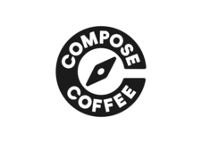
컴포즈커피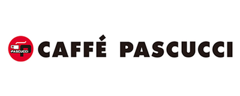
파스쿠찌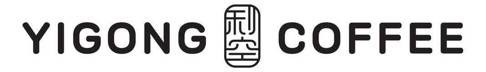
이공커피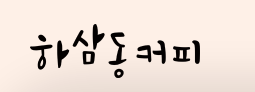
하삼동커피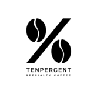
텐퍼센트스페셜티커피BEFORE · AFTER
물과 얼음이 닿는 곳은 시간이 지나면 곰팡이와 석회·물때가 쌓입니다. 분해 세척 전과 후를 나란히 비교해 보세요.
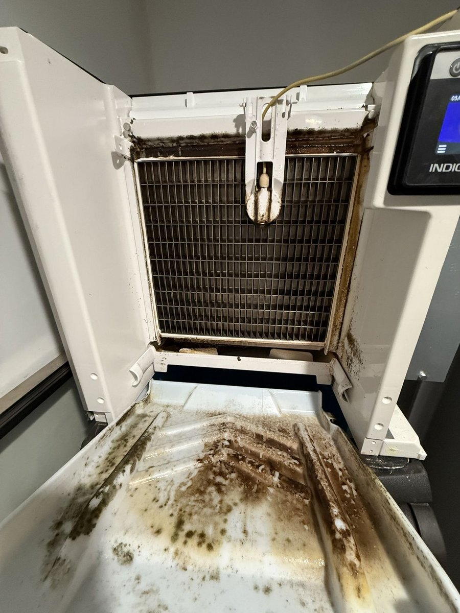
청소 전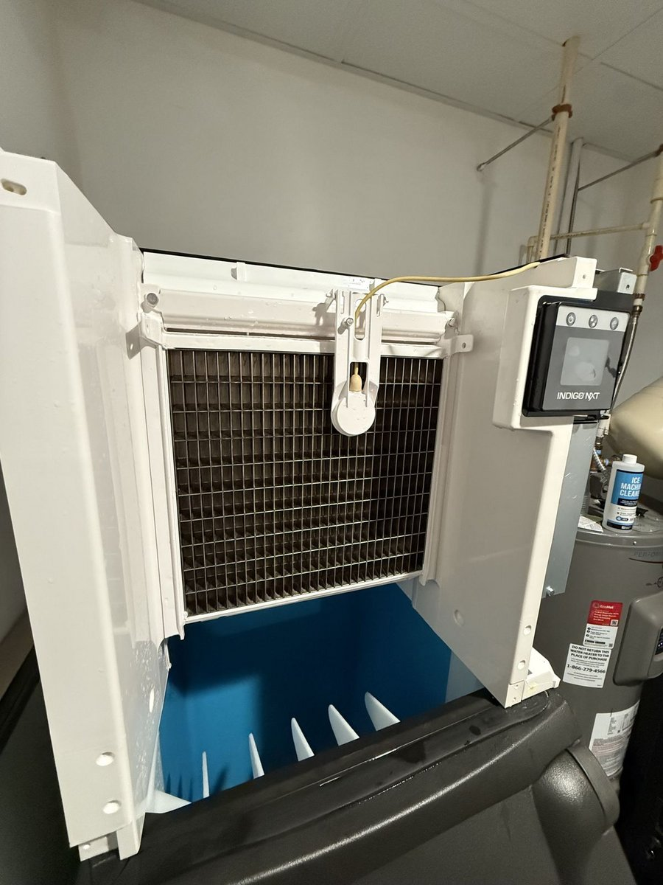
청소 후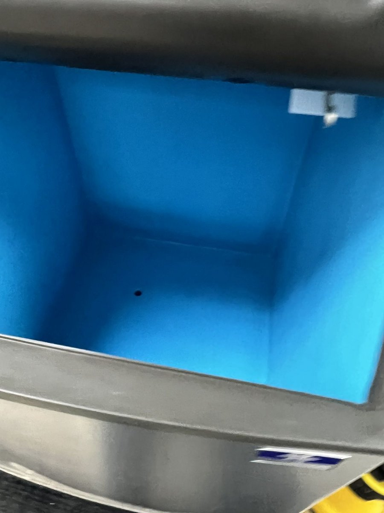
청소 후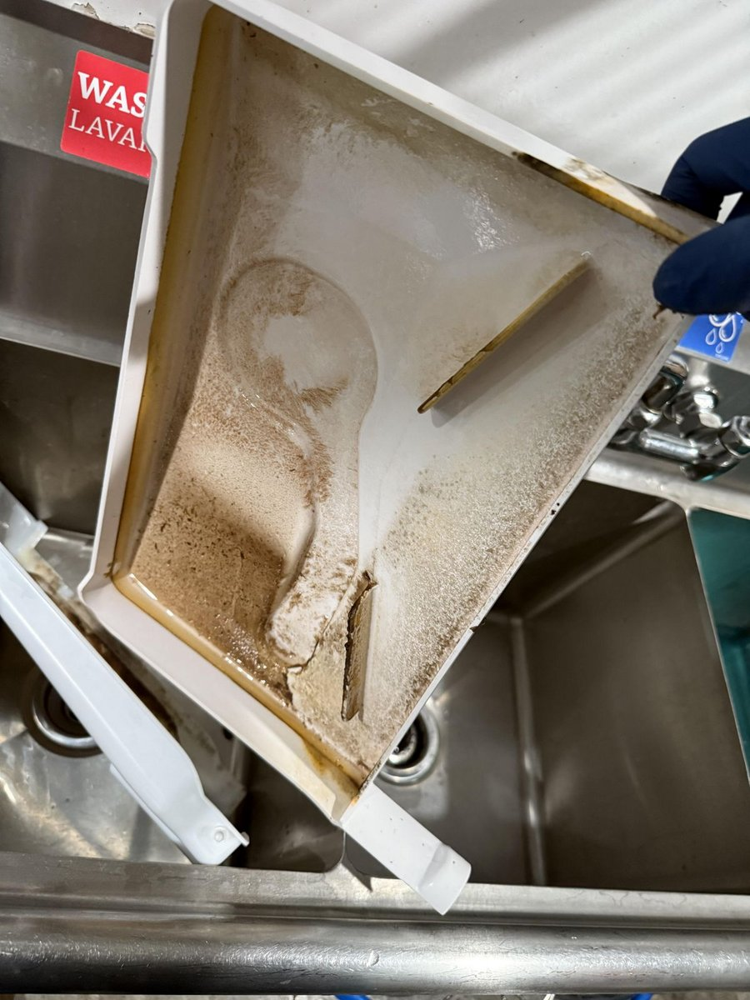
청소 전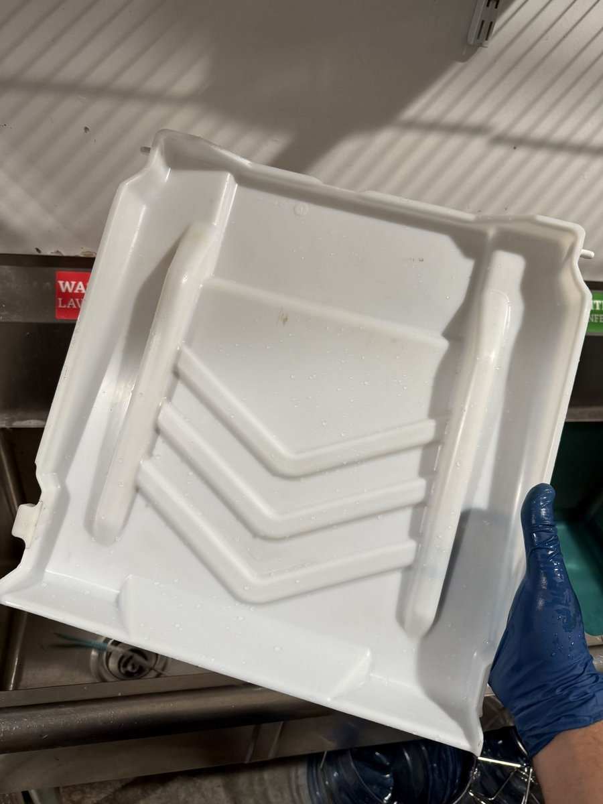
청소 후FAQ
기종의 크기와 오염 상태에 따라 달라집니다. 전화로 모델명을 알려 주시거나 모델명·제빙기 사진을 보내 주시면 확인한 뒤 비용을 먼저 안내해 드리고, 현장에서 임의로 금액이 바뀌는 일은 없습니다. 증상이 있으면 함께 알려 주시면 안내가 더 정확합니다.
일반적인 업소용 제빙기는 1시간에서 2시간 사이가 많고, 대형 기종이나 오염이 심한 경우 더 걸릴 수 있습니다. 상담 때 예상 소요 시간을 함께 안내해 드립니다.
청소 내용은 같습니다. 분해 세척부터 스팀 살균까지 동일한 과정으로 진행되고, 차이는 방문 횟수뿐입니다. 방문 간격은 정해진 기준이 아니라 매장의 얼음 사용량과 기계 상태를 보고 고객과 상의해 정합니다.
가능합니다. 다만 작업 중에는 제빙기를 멈춰야 합니다. 얼음은 미리 비축해 두시거나 저희가 보관해 드립니다. 손님께 노출될 수 있기 때문에 보통 마감 후에 진행합니다. 일정은 고객님과 맞춰 진행합니다.
네, 괜찮습니다. 전화로 모델명을 알려 주셔도 되고, 모델명이 적힌 스티커 사진을 찍어 보내 주셔도 됩니다. 그것도 어려우면 제빙기 전체 사진을 보내 주세요. 사진을 보고 구분해 드립니다. 호시자키·카이저부터 매니토웍·스카치맨까지, 전 브랜드 모두 진행합니다.
양주, 의정부, 동두천, 포천, 남양주, 구리, 파주, 고양, 연천, 강북, 중랑, 하남 등 근방 지역은 방문이 가능합니다. 권역 경계에 있는 지역은 일정에 따라 방문이 가능할 수 있으니, 전화 상담 때 지역을 알려 주시면 확인해 드립니다.
전화로 모델명을 알려 주시거나, 모델명 스티커나 제빙기 사진 한 장만 보내 주셔도 상담이 시작됩니다. 증상이 있으면 함께 알려 주세요.